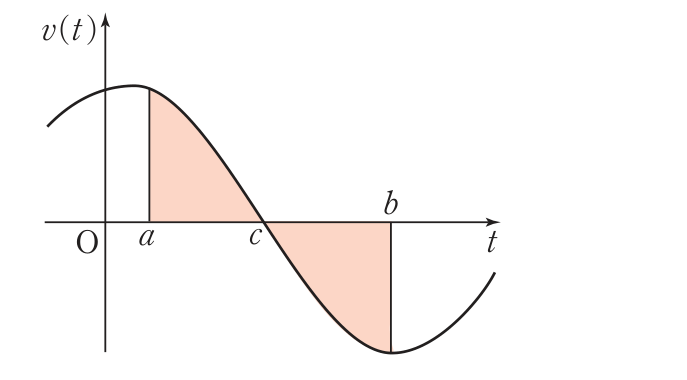

2026학년도 2학기 | 미적분 I
미적분 I 수업 학습지
00. 생각 열기 (Warm-up & Connection)
차시 19에서 위치 \(x(t)\)의 도함수가 속도 \(v(t)\)임을 배웠다. 즉 \(v(t) = x'(t)\). 그렇다면 그 역연산 — 속도 \(v(t)\)로부터 위치 \(x(t)\)를 복원하는 것은 어떤 연산일까?
[개방형 발문] 지상에서 출발하여 수직 방향으로 올라가는 열기구의 \(t\)초 후 높이가 \(x = 2t\,\,(0 \leq t \leq 10)\)이고 속도가 \(v(t) = 2\,\text{m/s}\)일 때:
- ① 10초 후 열기구의 높이는? \( 20\,\text{m} \)
- ② 정적분 \(\displaystyle\int_0^{10} v(t)\,dt = \int_0^{10} 2\,dt = \) \( 20 \)
- ③ ①과 ②의 결과를 비교해 보면? — 속도를 시간에 대해 적분하면 위치(거리)가 나온다!
이는 \(x'(t) = v(t)\)의 양변을 \([0, 10]\)에서 적분 \(\Rightarrow x(10) - x(0) = \int_0^{10} v(t)\,dt\). 미적분 기본정리(차시 24)가 운동학에 즉시 적용됨. (비상 미적분 I P.132 · 개념 탐구 참고)
[연결] 그런데 \(v(t)\)가 음수가 되면 — 점이 뒤로 움직이면 — 위치는 줄어들지만 "이동한 거리"는 계속 늘어난다. 즉 변위(위치 변화) \(\neq\) 이동 거리. 차시 27의 두 곡선 사이 넓이에서 절댓값이 위·아래 부호를 통합했듯이, 운동학에서도 절댓값 \(|v(t)|\)가 부호 있는 변위와 항상 양수인 거리의 차이를 메운다. 오늘 우리는 ① 위치 \(x(t) = x_0 + \int_{t_0}^t v(s)\,ds\), ② 위치 변화량(변위) \(\int_a^b v(t)\,dt\), ③ 이동 거리 \(\int_a^b |v(t)|\,dt\) — 세 가지를 명확히 구분하고 ④ 방향 전환 시점(\(v = 0\)) 기준 구간 분할로 거리를 정확히 구하는 절차를 익힌다.
01. 개념 구성 (Conceptual Foundation)
1 시각 \(t\)에서의 위치 \(x(t)\) — 초기 위치 + 변위 누적
수직선 위를 움직이는 점 P의 시각 \(t\)에서 속도가 \(v(t)\)이고, 시각 \(t_0\)에서 위치가 \(x_0\)일 때:
\( x(t) = x_0 + \) \( \displaystyle\int_{t_0}^{t} v(s)\,ds \)
유도: \(x'(t) = v(t)\)의 양변을 \([t_0, t]\)에서 적분 \(\Rightarrow x(t) - x(t_0) = \int_{t_0}^t v(s)\,ds\). 미적분 기본정리(차시 24).
적분 변수에 \(t\)를 쓰면 위 끝과 충돌하므로 \(s\)로 바꾸어 표기. (비상 미적분 I P.132 · 위치 공식 참고)
2 위치 변화량(변위) — 부호 있는 양
시각 \(t = a\)에서 \(t = b\)까지 점 P의 위치 변화량(변위):
\( x(b) - x(a) = \) \( \displaystyle\int_a^b v(t)\,dt \)
핵심: 변위는 부호를 가짐. \(v \gt 0\)이면 앞으로 진행하여 \(+\), \(v \lt 0\)이면 뒤로 진행하여 \(-\). 출발점과 도착점의 직선 거리·방향을 함께 나타낸다.
주의: 변위 \(= 0\)은 점이 정지했다는 뜻이 아니라 "출발점과 도착점이 같다"는 뜻. 도중에 멀리 갔다가 되돌아온 경우 가능. (비상 미적분 I P.132 · 위치의 변화량 참고)
3 이동 거리 — 항상 양수, 절댓값으로 통합

속도 \(v(t)\)가 \([a, b]\) 안에서 부호를 바꿀 때 (예: \([a, c]\)에서 \(v \geq 0\), \([c, b]\)에서 \(v \leq 0\)):
유도:
- ① \([a, c]\)에서 진행 거리 \(= x(c) - x(a) = \int_a^c v(t)\,dt\) (양수).
- ② \([c, b]\)에서 후진 거리 \(= x(c) - x(b) = -\int_c^b v(t)\,dt = \int_c^b \{-v(t)\}\,dt\) (양수).
- ③ 총 이동 거리 \(= \int_a^c v\,dt + \int_c^b (-v)\,dt = \int_a^c |v|\,dt + \int_c^b |v|\,dt = \int_a^b |v(t)|\,dt\).
총 이동 거리 \(= \displaystyle\int_a^b |v(t)|\,dt\)
실전 절차: ① \(v(t) = 0\)의 해(\(\to\) 방향 전환 시점) ② 각 구간의 부호 ③ 부호별로 \(v\) 또는 \(-v\) 적분 ④ 합산. (비상 미적분 I P.133 · 이동 거리 정리 참고)
4 변위 vs. 이동 거리 — 절대 혼동 금지
- 📌 변위 \(\int_a^b v(t)\,dt\): 부호 있음. 출발 \(\to\) 도착 직선 변화. 음수 또는 \(0\) 가능.
- 📌 이동 거리 \(\int_a^b |v(t)|\,dt\): 항상 \(\geq 0\). 실제로 움직인 총 길이. 후진 거리도 더함.
- 📌 \(v(t) \geq 0\)인 구간에서만 두 값이 일치. 그 외에는 \(|\text{변위}| \leq \text{이동 거리}\).
예 (예제 1 P.134): 좌표 2에서 출발, \(v(t) = 3 - t\). \(v = 0 \Rightarrow t = 3\). \([2, 6]\) 변위 \(= \int_2^6 (3 - t)\,dt = -4\) (4만큼 뒤로). 이동 거리 \(= \int_2^3 (3 - t)\,dt + \int_3^6 (t - 3)\,dt = \tfrac{1}{2} + \tfrac{9}{2} = 5\) (총 5만큼 움직임). 두 값이 명확히 다름. (비상 미적분 I P.134 · 예제 1 참고)
02. 수준별 훈련 (Level Training)
Level 1
위치·변위·거리의 표준 절차 — 다항 속도 함수
💡 힌트 보기
(1) \(x(3) = 0 + \int_0^3 (6t - 3t^2)\,dt = \big[3t^2 - t^3\big]_0^3 = 27 - 27 = 0\). 답: 0 (원점으로 돌아옴).
(2) \(\int_1^3 (6t - 3t^2)\,dt = \big[3t^2 - t^3\big]_1^3 = 0 - 2 = -2\). 답: \(-2\).
(3) \(\int_1^2 (6t - 3t^2)\,dt + \int_2^3 (3t^2 - 6t)\,dt = \big[3t^2 - t^3\big]_1^2 + \big[t^3 - 3t^2\big]_2^3 = (4 - 2) + (0 - (-4)) = 2 + 4 = 6\). 답: 6.
💡 힌트 보기

💡 힌트 보기
Level 2
구간별 정의·드론 등 결합형 응용
💡 힌트 보기
(1) \(x(2) = -1 + \int_0^2 (t^2 - 4t + 3)\,dt = -1 + \big[\tfrac{1}{3}t^3 - 2t^2 + 3t\big]_0^2 = -1 + \tfrac{2}{3} = -\tfrac{1}{3}\).
(2) \(\int_0^3 (t^2 - 4t + 3)\,dt = \big[\tfrac{1}{3}t^3 - 2t^2 + 3t\big]_0^3 = 9 - 18 + 9 = 0\). 답: 0 (변위 \(= 0\)).
(3) \(\int_0^1 (t^2 - 4t + 3)\,dt + \int_1^2 -(t^2 - 4t + 3)\,dt = \tfrac{4}{3} + \tfrac{2}{3} = 2\). 답: 2.
💡 힌트 보기
\(\int_0^{10} \tfrac{1}{2}t\,dt + \int_{10}^{12}(15 - t)\,dt = \big[\tfrac{1}{4}t^2\big]_0^{10} + \big[15t - \tfrac{1}{2}t^2\big]_{10}^{12}\)
\(= 25 + \{(180 - 72) - (150 - 50)\} = 25 + (108 - 100) = 25 + 8 = 33\). 답: 33\,m.
💡 힌트 보기
Level 3
"틀려야 는다!" 두 점의 만남 — 두 점의 위치 함수 비교
🚨 선생님의 함정 경고 (클릭하여 펼치기)
"두 점이 만난다"는 말 때문에 속도 \(v_\text{P} = v_\text{Q}\)로 푸는 함정에 빠지기 쉽다. 핵심은 "같은 시각에 같은 위치" — 즉 위치 함수 \(x_\text{P}(t) = x_\text{Q}(t)\)를 풀어야 한다.
STEP 1 — 위치 함수 구성:
\(x_\text{P}(t) = 0 + \int_0^t (4s + 5)\,ds = 2t^2 + 5t\).
\(x_\text{Q}(t) = -3 + \int_0^t (3s^2 - 8s + 14)\,ds = -3 + t^3 - 4t^2 + 14t\).
STEP 2 — 만남 조건 \(x_\text{P}(t) = x_\text{Q}(t)\):
\(2t^2 + 5t = -3 + t^3 - 4t^2 + 14t\)
\(\Rightarrow t^3 - 6t^2 + 9t - 3 = 0\)? 다시 정리: \(0 = t^3 - 4t^2 + 14t - 3 - 2t^2 - 5t = t^3 - 6t^2 + 9t - 3\).
STEP 3 — 삼차방정식 \(f(t) = t^3 - 6t^2 + 9t - 3\)의 양의 실근 개수:
\(f'(t) = 3t^2 - 12t + 9 = 3(t - 1)(t - 3)\). 극대 \(t = 1\), 극소 \(t = 3\). \(f(1) = 1 - 6 + 9 - 3 = 1 \gt 0\), \(f(3) = 27 - 54 + 27 - 3 = -3 \lt 0\), \(f(0) = -3 \lt 0\), \(f(4) = 64 - 96 + 36 - 3 = 1 \gt 0\).
STEP 4 — 부호 변화로 근의 위치 파악: \(f(0) \lt 0,\ f(1) \gt 0\) \(\Rightarrow\) \((0, 1)\)에 근 1개. \(f(1) \gt 0,\ f(3) \lt 0\) \(\Rightarrow\) \((1, 3)\)에 근 1개. \(f(3) \lt 0,\ f(4) \gt 0\) \(\Rightarrow\) \((3, 4)\)에 근 1개. 양의 실근 3개.
결론: 두 점이 만나는 횟수 \(= 3\)회.
핵심 통찰: 운동학에서 "만난다 \(=\) 같은 위치", "스친다 \(=\) 같은 속도"는 전혀 다른 조건. 위치 비교는 ① 속도를 적분해 위치 함수 작성 ② 초기 위치(\(x_0\)) 빠뜨리지 말 것 ③ \(x_\text{P} = x_\text{Q}\) 방정식을 푼다. 차시 18(방정식과 부등식에의 활용 — 삼차함수 극값 분석)이 결합되는 종합 문제. 평가원·내신 단골 출제.
03. 형성평가 (Final Check)
💡 풀이 전략
⭐ 도전 문제 1
📖 출처: 수능특강 수학Ⅱ · 정적분의 활용 · 유제 4
난이도 ★★★ (학습지 max+2, 6분) · 핵심: 방향 전환 시각 \(p\)는 \(v(p) = 0\)이면서 \(v\)의 부호가 변하는 시점. 이동 거리는 \(\int_0^p |v|\,dt\) — 차시 28 핵심 절차의 직접 응용
📖 풀이 흐름 보기 (직접 풀어본 후 펼치기)
- STEP 1 — 방향 전환 시각 \(p\): \(v(t) = 2t^2 - 6t = 2t(t - 3) = 0 \Rightarrow t = 0\) 또는 \(t = 3\). \(t = 0\)은 출발 시점이므로 방향 전환은 \(t = 3\)에서 발생 ⇒ \(p = 3\).
- STEP 2 — \([0, 3]\)에서 부호 확인: \(0 \lt t \lt 3\)일 때 \(t \gt 0\), \(t - 3 \lt 0\) ⇒ \(v(t) = 2t(t - 3) \lt 0\). \(t \gt 3\)일 때 \(v \gt 0\). \(t = 3\) 전후로 부호가 변하므로 방향 전환 조건 만족.
- STEP 3 — 이동 거리 식: \([0, 3]\)에서 \(v \leq 0\)이므로 \(|v(t)| = -v(t) = -2t^2 + 6t\). \(\displaystyle\int_0^3 |v(t)|\,dt = \int_0^3 (-2t^2 + 6t)\,dt\).
- STEP 4 — 정적분 계산: \(\big[-\tfrac{2t^3}{3} + 3t^2\big]_0^3 = -\tfrac{2 \cdot 27}{3} + 27 = -18 + 27 = 9\). 정답: ④ \(9\)
핵심: "방향 전환" = \(v = 0\)이고 부호가 바뀌는 시점. 출발점 \(t = 0\)은 제외. 이동 거리는 항상 \(\int|v|\,dt\)이므로 \(v \lt 0\) 구간에서는 부호를 뒤집어 적분. 변위(\(\int v\,dt = -9\), 음수)와 거리(\(9\))의 차이에 주의. 차시 28의 핵심 절차 ① 방향 전환 시각 ② 부호 분석 ③ \(\int|v|\) 계산이 그대로 적용되는 수능특강 표준형.
⭐ 도전 문제 2
📖 출처: 2007년 7월 학력평가 가형 21번
난이도 ★★★ (학습지 max+2, 8분) · 핵심: 그래프에서 \(v(t) = f'(t)\)의 부호를 읽어 "출발할 때의 운동 방향(\(v(0)\)의 부호) vs. 반대 방향" 구간을 식별하고, 그 구간에서 \(|v|\)의 정적분으로 거리 \(d\)를 계산
![2007년 7월 학평 가21 그림 — 이차함수 y=f'(t) 그래프. (0, 3)에서 시작해 t=1, t=3에서 t축과 만남. [1, 3] 구간에서 f'(t) < 0 (반대 방향), [0, 1] 및 t > 3에서 f'(t) > 0 (출발 방향)](images/calc_28_chal2_kichul.png)
📖 풀이 흐름 보기 (직접 풀어본 후 펼치기)
- STEP 1 — 속도 함수 \(v(t) = f'(t)\) 결정: 그래프에서 \(f'(t)\)는 \(t = 1, 3\)을 두 영점으로 갖는 이차함수이며 \(f'(0) = 3\). 따라서 \(f'(t) = a(t - 1)(t - 3)\) 꼴. \(f'(0) = a \cdot (-1) \cdot (-3) = 3a = 3 \Rightarrow a = 1\). 결론: \(v(t) = (t - 1)(t - 3) = t^2 - 4t + 3\).
- STEP 2 — 출발 방향 파악: \(v(0) = 3 \gt 0\). 점 P는 출발할 때 양의 방향(\(+\))으로 움직임. 따라서 "반대 방향"은 \(v(t) \lt 0\)인 구간 — 음의 방향 운동.
- STEP 3 — 반대 방향 구간 식별: \(v(t) = (t - 1)(t - 3) \lt 0 \Leftrightarrow 1 \lt t \lt 3\). 그래프에서도 \(y = f'(t)\)가 \(t\)축 아래에 있는 구간이 정확히 \([1, 3]\). 이 구간에서 점 P가 반대 방향(음의 방향)으로 움직임.
- STEP 4 — 거리 \(d\) 계산: 반대 방향으로 움직인 거리는 \([1, 3]\)에서 \(|v(t)|\)의 정적분. \(v \lt 0\)이므로 \(|v| = -v\). \[ d = \int_1^3 -v(t)\,dt = \int_1^3 (-t^2 + 4t - 3)\,dt. \] 부정적분: \(\big[-\tfrac{1}{3}t^3 + 2t^2 - 3t\big]_1^3\). \(t = 3\): \(-9 + 18 - 9 = 0\). \(t = 1\): \(-\tfrac{1}{3} + 2 - 3 = -\tfrac{4}{3}\). 따라서 \(d = 0 - \big(-\tfrac{4}{3}\big) = \tfrac{4}{3}\).
- STEP 5 — \(12d\): \(12d = 12 \times \tfrac{4}{3} = 16\). 정답: \(16\)
핵심: 그래프에서 (1) 영점 → 속도 함수의 인수, (2) 초깃값 \(f'(0)\) → 최고차항 계수, 두 정보로 \(v(t)\) 완전 복원. "출발할 때의 반대 방향" = \(v(0)\)의 부호 반대 = \(v(t)\)의 부호 음(또는 양)인 구간. 이 구간의 \(|v|\) 정적분이 곧 반대 방향 이동 거리. 차시 28의 핵심 절차 — 부호 분기 → 절댓값 정적분 — 그대로 적용되는 평가원의 모범 ★★★ 문제.
04. 메타인지 성찰 (Exit Ticket)
스마트폰으로 우측 QR코드를 스캔하여, 아래 3가지 유형 중 하나 이상을 체크하고 통합 서술형으로 작성해 제출한다.